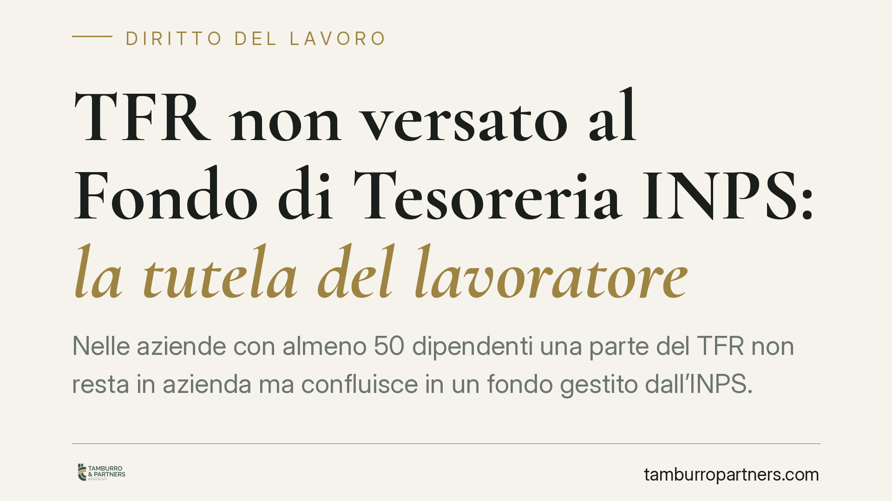

TFR non versato al Fondo di Tesoreria INPS: la tutela del lavoratore
Nelle aziende con almeno 50 dipendenti una parte del TFR non resta in azienda ma confluisce in un fondo gestito dall'INPS. Cosa accade se il datore non versa e poi diventa insolvente? Il lavoratore non perde la propria quota: il credito resta retributivo e, in caso di liquidazione giudiziale, può attivarsi la tutela pubblica contro l'insolvenza.

Il fatto e perché conta
Il trattamento di fine rapporto (TFR) è la somma che matura anno per anno e viene corrisposta al lavoratore alla cessazione del rapporto. Per le imprese con almeno 50 addetti, una parte di queste quote non rimane nella disponibilità dell'azienda: deve essere versata mensilmente a un fondo gestito dall'INPS, il cosiddetto Fondo di Tesoreria.
La domanda operativa è semplice ma rilevante: se il datore omette questi versamenti e in seguito viene dichiarato insolvente, il lavoratore rischia di perdere la quota di TFR? La risposta, in linea con l'orientamento di legittimità, è negativa.
> Nota di trasparenza. La sintesi da cui muove questo contributo richiama una pronuncia delle Sezioni Unite (n. 26356) i cui estremi, alla data di redazione, non ci è stato possibile riscontrare in modo autonomo su fonte ufficiale. Per correttezza impostiamo quindi l'articolo sul quadro normativo e interpretativo consolidato, e non sulla singola pronuncia. Consigliamo di verificare gli estremi definitivi prima di fondarvi atti o difese.
Inquadramento normativo
Il TFR è disciplinato dall'art. 2120 cod. civ. ed è qualificato come retribuzione differita: pur essendo erogato a fine rapporto, matura durante l'esecuzione del contratto ed è a tutti gli effetti un credito del lavoratore verso il datore.
La legge 296/2006 (art. 1, commi 755 e seguenti) ha istituito il Fondo di Tesoreria presso l'INPS, destinato a ricevere le quote di TFR maturate nelle imprese con almeno 50 dipendenti che non siano state destinate a forme di previdenza complementare. Si tratta di un meccanismo di gestione corrente: il TFR continua a maturare in capo al lavoratore, ma il suo pagamento transita dall'ente.
È importante non confondere due strumenti distinti, entrambi gestiti dall'INPS:
- il Fondo di Tesoreria, che gestisce ordinariamente le quote di TFR delle aziende sopra soglia;
- il Fondo di Garanzia istituito dall'art. 2 della legge 297/1982, che interviene a tutela del lavoratore in caso di insolvenza del datore, subentrando nel pagamento del TFR non corrisposto.
Il principio è che l'omesso versamento al Fondo di Tesoreria non trasforma la natura del credito: la quota resta un credito retributivo del lavoratore verso il datore. Di conseguenza, se il datore diventa insolvente e non ha versato, il lavoratore può rivolgersi al Fondo di Garanzia, che è il presidio pubblico contro l'insolvenza.
I termini: due piani da tenere distinti
Qui occorre precisione, perché si sovrappongono due regimi diversi.
Primo piano – prescrizione del TFR. Il diritto al TFR si prescrive in cinque anni ai sensi dell'art. 2948 n. 5 cod. civ., a decorrere dalla cessazione del rapporto.
Secondo piano – azione verso il Fondo di Garanzia. La domanda di intervento del Fondo si inserisce in un procedimento proprio, regolato dall'art. 2 della legge 297/1982, e presuppone l'accertamento del credito nella procedura concorsuale. Si tratta di un regime distinto rispetto alla prescrizione del credito verso il datore: non è corretto equipararlo in modo generico al termine quinquennale. Data la delicatezza del coordinamento tra accertamento del credito e attivazione del Fondo, è bene non affidarsi a formule generiche.
Implicazioni pratiche per il lavoratore
Il messaggio operativo è che l'inadempimento del datore verso l'INPS non ricade sul lavoratore. La quota di TFR confluita (o che avrebbe dovuto confluire) nel Fondo di Tesoreria resta tutelata, e l'insolvenza non azzera il diritto.
Rimane però essenziale muoversi per tempo: la tutela presuppone l'insinuazione del credito nella procedura e il rispetto delle modalità previste per l'intervento del Fondo. L'inerzia, non il meccanismo normativo, è il vero rischio.
Cosa fare in concreto
- Verificate la soglia dimensionale. Accertate se l'azienda ha almeno 50 dipendenti: è il presupposto che fa scattare l'obbligo di versamento al Fondo di Tesoreria.
- Richiedete l'estratto conto contributivo INPS. Consente di controllare quali quote di TFR siano state effettivamente versate e di individuare eventuali omissioni.
- Conservate ogni documento retributivo. Buste paga, prospetti del TFR maturato e comunicazioni aziendali sono la base per quantificare il credito.
- In caso di procedura concorsuale, insinuate il credito. La tutela del Fondo di Garanzia passa dall'accertamento del credito nella liquidazione giudiziale.
- Agite nei termini. Tenete distinta la prescrizione del TFR dal regime dell'azione verso il Fondo: verificate le scadenze con assistenza qualificata prima di presentare la domanda.
---
Contributo informativo a cura di Tamburro & Partners - Avv. Giuseppe Tamburro. Non costituisce parere legale.
Ogni storia di lavoro ha i suoi tempi.
Se gestisci HR e vuoi un confronto su contenzioso, ispezioni o licenziamenti, scrivi allo studio. Ti rispondiamo entro un giorno lavorativo.